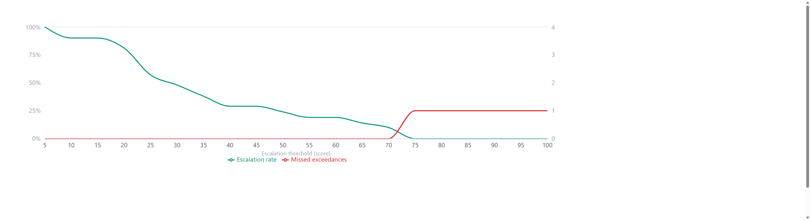

It is built, and it is live
Upload a batch. The queue reorders itself.
Open any sample and you get the reasoning, driver by driver — not a black box.
Disagree with our risk appetite? Change the weights and every score moves.

fluorsight.co.uk

Fluorsight · PFAS field triage
Upload a batch. The queue reorders itself.
Open any sample and you get the reasoning, driver by driver — not a black box.
Disagree with our risk appetite? Change the weights and every score moves.
fluorsight.co.uk
No bench experiments have been run. The chemistry is specified from literature. The demo data is synthetic — we wrote it.
So we have no detection limit to quote, and we are not going to invent one.

| Sept · Evan | Five discovery interviews across consultancies, a Part 2A officer and a lab. Kills it if nobody confirms budget forces under-sampling. |
|---|---|
| Sept · Alex | Design the paired validation study with our mentor — power, stratification, and the cost ratio that should set the threshold. Kills it if the sample size needed is unaffordable; then the claim changes, not the study. |
| Oct · Dom | Cost the four-probe array route — probes, reader, and the discriminant analysis. Kills it if one probe cannot separate PFAS from surfactants on paper; then we build for the array from the start. |
| Ongoing | We have no laboratory access. Bench work is a final-year project. Until then every performance figure stays a bound, not a rate. |
Every PFAS investigation in Britain is already triaged.
Today it is triaged by budget.
It should be triaged by risk — and written down.
fluorsight.co.uk
Live now — no login.
We are looking for one consultancy or laboratory with archived samples already analysed by LC-MS/MS. That single partnership removes the largest cost from our validation plan.
Dom · Chemistry | Evan · Aerospace Engineering | Alex · Mathematics
University of Bristol